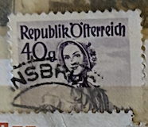
| SOURCE | TITLE| IMAGE MATCH | click to source page |
| Todocolección | austria - v/f 25 heller - año 1916 - emperador - Buy Antique stamps of Austria on todocoleccion | 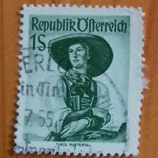 |
| eBay | Austria, Scott 528, Austrian Costumes, 1948-1952, used | eBay | 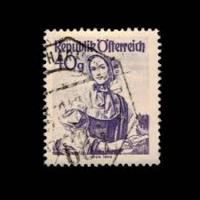 |
| eBay | Austria, Scott 529, Austrian Costumes, 1948-1952, used | eBay | 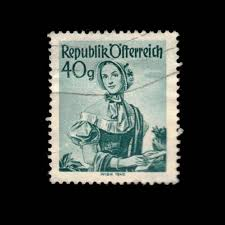 |
| Mercari | ST-774) Stamp: 1949 Austria, Scott #529 Rare | Mercari | 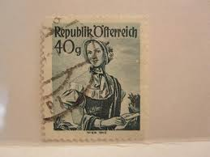 |
| ebid.net | GERMANY, BAVARIA, Bayern Dienstmarke, red 1916, 10Pf, #2 on eBid United States | 194271142 | 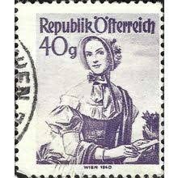 |
| eBay | Austrian Stamps 1948 / Costumes / Scott #529, 532 / 40 & 60 G / Used | eBay | 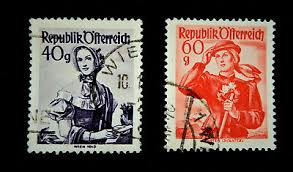 |
| Todocolección | austria ersttag osterreich fdc edmund eysler 18 - Buy Antique stamps of Austria on todocoleccion | 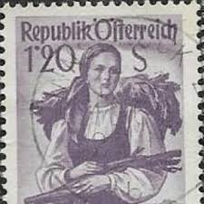 |
| Amazon.com | Amazon.com: Austria 908 unmounted Mint/Never hinged ** MNH 1948 Costume Series (Stamps for Collectors) Uniforms/Costumes : Toys & Games | 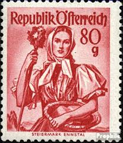 |
| Etsy | 1949 Austria Stamps – National Costumes Collection - Etsy Israel | 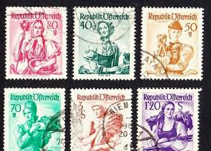 |
| eBay | 1950S CUSTOMS 1.40S VF MNH AUSTRIA ÖSTERREICH | eBay | 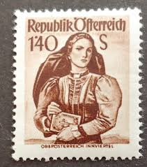 |
| eBay | 1950S CUSTOMS 7S VF MNH AUSTRIA ÖSTERREICH | eBay | 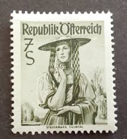 |
| eBay | AUSTRIA EUROPE STAMPS USED LOT 212CA | eBay | 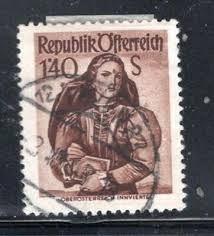 |
| Colnect | Stamp: Vienna (1850) (Austria(Provincial Costumes 1948/58) Mi:AT 898y,Sn:AT 525a,Yt:AT 885,Sg:AT 1113,ANK:AT 1055,Un:AT 885 📮 | 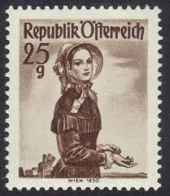 |
| eBay | Austria Culture Ethnicities Tirol Woman stamp 1957 A-8 | eBay | 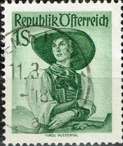 |
| eBay | Austria 923 unmounted mint / never hinged 1948 Costumes (9703499 | eBay | 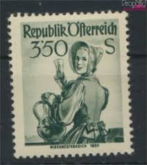 |
| eBay | Austria - Sc# 536 MH - Lot 0923713 | eBay | 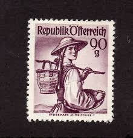 |
| eBay | Austria, Scott 552, Austrian Costumes, 1948-1952, used | eBay | 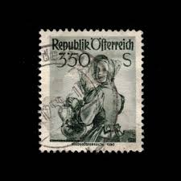 |
| eBay | Austria, Scott 540, Austrian Costumes, 1948-1952, used | eBay | 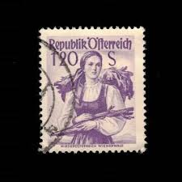 |
| eBay | Austria 90g Scott# 536 MH | eBay | 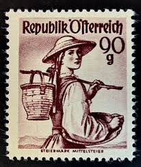 |
| eBay | Stamps Austria 1948 Mi 907 MNH 1948 Costumes (10584439 | eBay | 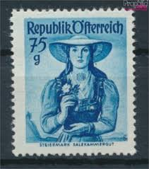 |
| eBay | AUSTRIA # 555 Used ETHNIC COSTUME, STEIERMARK SULM VALLEY | eBay | 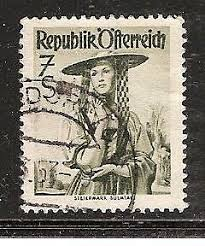 |
| eBay | GB 16p olive-drab machin stamp x 7 + 10p used on small piece | eBay | 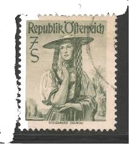 |
| ilcs.org | Austria 1964 Stamp Day 3s + 70g Unmounted Mint, SG 1440 | 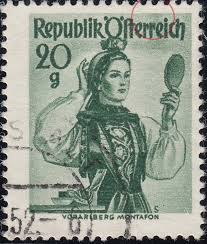 |
| eBay | BL) Austria 1948-57 Scott #556 | eBay | 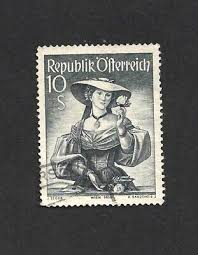 |
| eBay | Austrian Stamps 1951 Costumes 1'45.S / Scott #542 Used | eBay Australia | 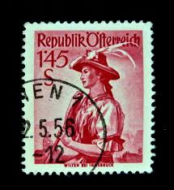 |
| eBay | Timbres Autriche 1948 Mi 894-898 neuf 1948 costume série | eBay | 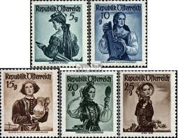 |
| eBay | Austria Scott 533 Stamp - Lower Austria, Wachau 1949 (Mint Hinged) 52_10 | eBay | 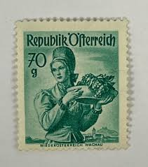 |
| eBay | Austria, Scott 522, Austrian Costumes, 1948-1952, used | eBay | 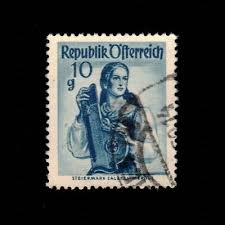 |
| eBay | Vintage Austria 30g RepubliK Ofterreich Stamp Salzburg Pongau 11216bb18 | eBay | 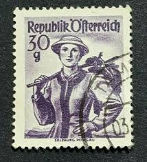 |
| eBay | STEIRMARK, SULM VALLEY,- AUSTRIAN COSTUMES,- SC 555 AUSTRIA- 1952 | eBay | 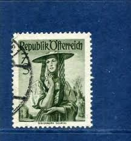 |
| Todocolección | austria, 1962, monumentos, yvert 950a - Buy Antique stamps of Austria on todocoleccion | 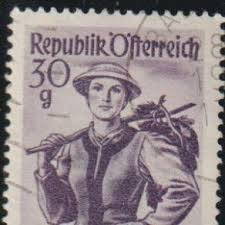 |
| eBay | AUSTRIA ^^^^^^Sc# 552,555 KEYS hinged COSTUMES hcv @@ xxha3568ostt9 | eBay | 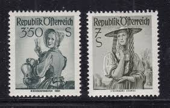 |
| eBay | Austria 1951 3s.50 costume MNH | eBay | 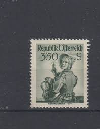 |
| eBay | Stamp Austria, Scott # 552 Mint VLH | eBay | 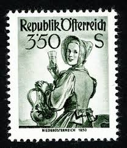 |
| eBay | Austria - Scott # 552 | eBay | 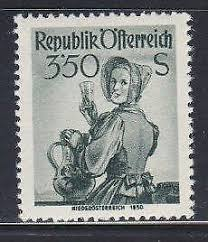 |
| Todocolección | austria osterreich 80 heller año 1920. - Buy Antique stamps of Austria on todocoleccion | 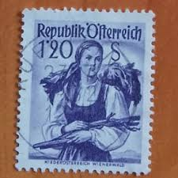 |
| ebid.net | Poland 1950 President Boleslaw Bierut 5gr Used Stamp on eBid United States | 210959340 | 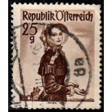 |
| eBay | Austria - 1948 - Scott # 538 - Mint Lightly Hinged - MLH | eBay | 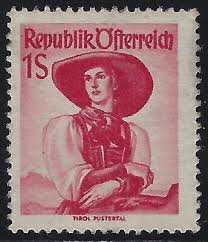 |
| Todocolección | austria - v/f 15 heller - año 1917 - monarquia, - Buy Antique stamps of Austria on todocoleccion | 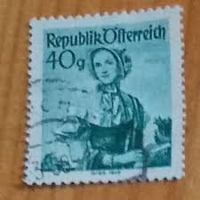 |
| eBay | Austria Stamps 1948-1951 Women's Costumes Lot of 18 Used, See Photos | eBay | 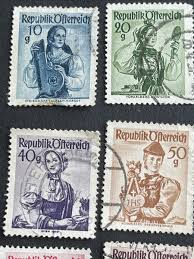 |
| Amazon.ca | Austria 978-980 (Complete.Issue.) unmounted Mint/Never hinged ** MNH 1952 Costumes (Stamps for Collectors) Uniforms/Costumes, Collectible Postage Stamps - Amazon Canada | 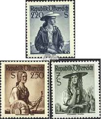 |
| eBay | Austria Scott 527 Stamp - Salzburg, Pongau 1950 (Mint Hinged) 52_8 | eBay | 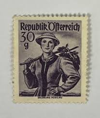 |
| Mercari | Austria 1950 AUSTRIAN COSTUME, SALZBURG SC | Mercari | 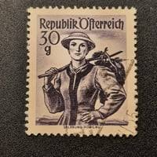 |
| vividagallery.com | Tirol Pustertal Traditional Costume Austrian Folk Heritage Woman Tote Bag by Vivida Gallery - Vivida Gallery | 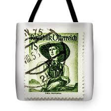 |
| Todocolección | austria 1908 scott j38 sello º cifras numeros p - Buy Antique stamps of Austria on todocoleccion | 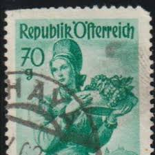 |
| Todocolección | austria - v/f 15 heller - año 1916 - monarquia, - Buy Antique stamps of Austria on todocoleccion | 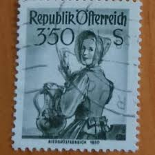 |
| eBay | Foreign Stamp 20 Republik Osterreich Used - #7147 | eBay | 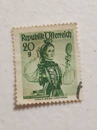 |
| Todocolección | austria 2006 - steyr 220 black print mnh** - Buy Antique stamps of Austria on todocoleccion | 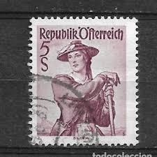 |
| eBay | Austria 978-980 (complete issue) unmounted mint / never hinged 1952 Co (9795481 | eBay | 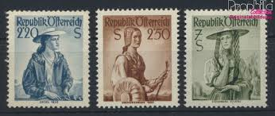 |
| eBay | Austria, Scott 527, Austrian Costumes, 1948-1952, used | eBay | |
| eBay | Austria - Sc# 552 MLH - Lot 0923711 | eBay | |
| ebid.net | Mauritius 1969 Marine Life 10 cent Used Stamp. QE II Starfish on eBid United States | 216283407 | |
| eBay | Austria Stamps # 552 MNH VF Lot Of 4 Sets Scott Value $84.00 | eBay | |
| Todocolección | o) 1921 austria, austria crown 10h magenta, coa - Buy Antique stamps of Austria on todocoleccion | |
| eBay | Austria, Scott 524, Austrian Costumes, 1948-1952, used | eBay | |
| eBay | TIMBRE AUTRICHE AUSTRIA OSTERREICH 1948 – 1949 COSTUMES FEMMES WOMEN KOSTUME DAM | eBay | |
| Todocolección | austria - v/f 5 heller - año 1918 - monarquía, - Buy Antique stamps of Austria on todocoleccion | |
| eBay | No: 103522 - AUSTRIA - AN OLD BLOCK OF 4 (40 g) - MNH!! | eBay | |
| Todocolección | osterreich austria 5 heller, franz josef año 19 - Buy Antique stamps of Austria on todocoleccion | |
| eBay | Austria 536 MLH CV $45.00 | eBay |